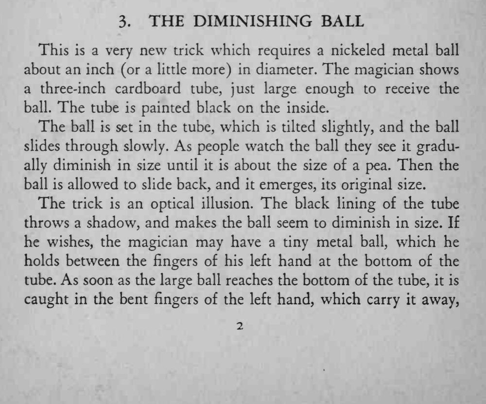
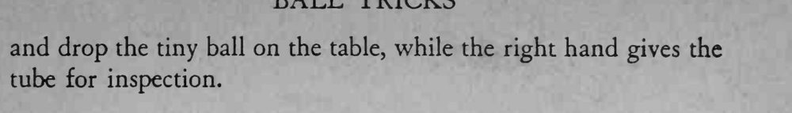

金属球从黑筒里缓缓滚下，观众看着它一路变小，滚到底时只有豌豆大小；再滚回来又恢复原样。
纸筒不要正对强光，黑色内壁的阴影越明显，缩小的错觉越强。


This is a very new trick which requires a nickeled metal ball about an inch (or a little more) in diameter. The magician shows a three-inch cardboard tube, just large enough to receive the ball. The tube is painted black on the inside. The ball is set in the tube, which is tilted slightly, and the ball slides through slowly. As people watch the ball they see it gradually diminish in size until it is about the size of a pea. Then the ball is allowed to slide back, and it emerges, its original size. The trick is an optical illusion. The black lining of the tube throws a shadow, and makes the ball seem to diminish in size. If he wishes, the magician may have a tiny metal ball, which he holds between the fingers of his left hand at the bottom of the tube. As soon as the large ball reaches the bottom of the tube, it is caught in the bent fingers of the left hand, which carry it away, and drop the tiny ball on the table, while the right hand gives the tube for inspection.